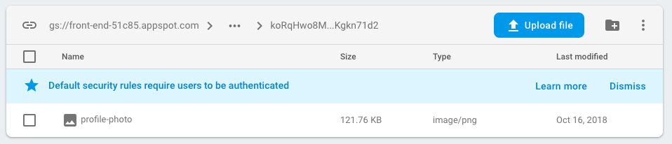

To set up Storage, start by clicking on the Storage link in the Firebase menu.

The Firebase Database can only save basic data like numbers, strings and booleans. This is great for storing user posts, passwords and likes.
If we want to save files like images or videos we need to use the Storage area in Firebase.
To set up Storage, start by clicking on the Storage link in the Firebase menu.
You will be prompted to "Get Started".

Then you will approve the default security rules.

This will create an empty storage folder where we can add media files.
We're going to start by giving our users the ability to add a Profile picture. To do this we need to upload an image to Storage and then get the URL where the image is stored and save it in the database with the user.
We'll start by adding a profile page. This is a separate page from the
Before leaving
Over on
For the HTML, we can delete the main content sections #posts and #write-post.
We'll replace that with the #profile section.
In the profile section we'll add a file input for the user to upload a photo. That's all we'll add for now.
Next, let's update the scripts in
We still need
We'll replace those with just
Next we're going to make an update to the
Previously, we created a function, displayUserInfo which was triggered when the user logged in, and manually set various components to display or not display.
Let's make a more sophisticated version of this using CSS nested rules.
I'm going to add a CSS file called
I'll define two classes, .no-user and .user-logged-in that can be updated with the Firebase authentication.
Then we'll nest the divs we want to display or hide for each.
A nested rule uses a space between the parent and child elements and targets any element inside the parent.
We can also use a comma to add more selectors to this rule.
Then add the elements we don't want to see when user is logged in.
Now the inverse when no user is logged in.
Now we can update onAuthStateChanged to turn these classes on and off.
When the auth state changes we want to add the correct class and remove the other class in case it is currently in use.
To upload the image, we need listen for when the user click the submit image button and then grab the file and put it in Firebase storage.
Once in storage, we can grab the URL for the image to add to the database and user account.
Start with the usual window load event listener.
Listen for the user click.
Get the file from the HTML input.
The storage reference is structured the same way as the firebase database reference.
With the filePromise we can add the photo URL and use it to update the database and user account.
To get the photo URL we need to use another method that returns a promise, getDownloadURL(). To do this we can use a common structure with Promises. We return the result of photo.ref.getDownloadURL() and add another .then() to deal with the new Promise created.
You should see the image appear in the Storage files.
And the URL will be added to the Database.

These reference will allow us to display the user photo when they're logged in and next to the posts that they write.
We already have some HTML to populate the user name and image on their profile.
We can add another function to update the profile image and name when the user is logged in.